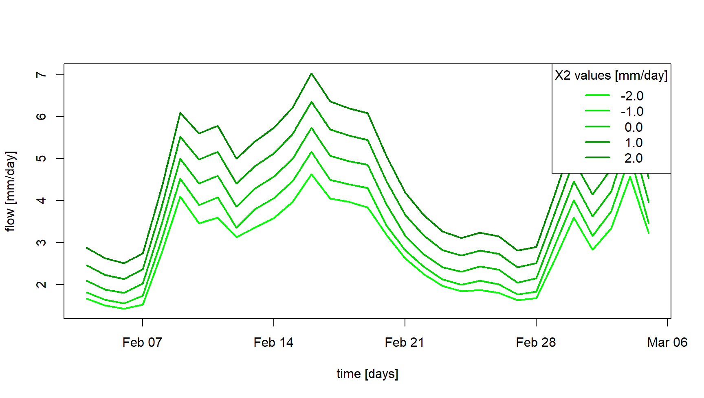
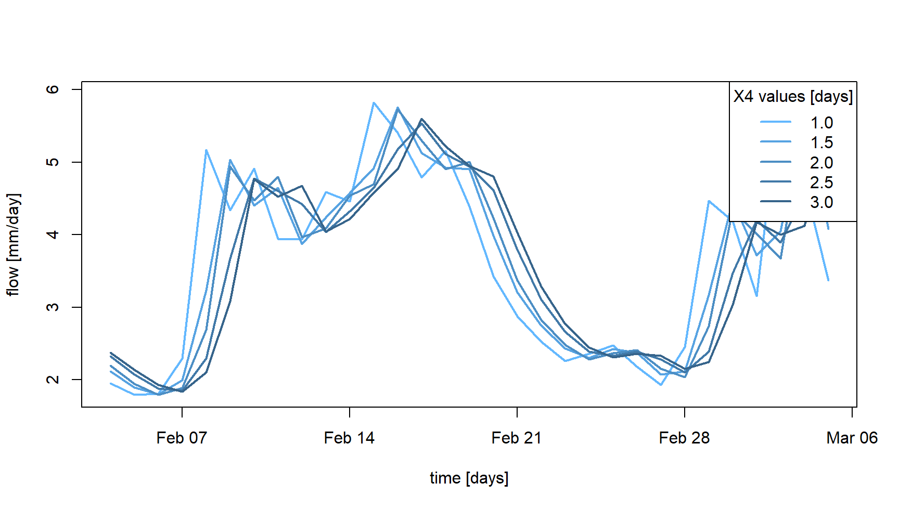

Teaching hydrology with airGRteaching
Pierre Brigode & Olivier Delaigue
The purpose of this tutorial is to present teaching activities and exercises that can be done in hydrology classes.
1 Data loading
The figures and simulation performed in this document are based on hydro-meteorological data provided by the airGRdatasets package. The following commands load daily temporal series for one particular catchment.
## Warning: package 'airGRdatasets' was built under R version 4.5.2# Catchment data loading
data("B222001001", package = "airGRdatasets")
# Structure of the catchment data object
str(B222001001)## List of 3
## $ Meta :List of 4
## ..$ Code:List of 2
## .. ..$ H3: chr "B222001001"
## .. ..$ H2: chr "B2220010"
## ..$ Name: chr "La Meuse à Saint-Mihiel"
## ..$ Coor:List of 2
## .. ..$ X: num 5.53
## .. ..$ Y: num 48.9
## ..$ Area: num 2543
## $ TS :'data.frame': 7305 obs. of 6 variables:
## ..$ Date: POSIXct[1:7305], format: "1999-01-01" "1999-01-02" "1999-01-03" ...
## ..$ Ptot: num [1:7305] 0.1 5.8 5.3 1.2 0 0.1 12.3 4 2.9 1.2 ...
## ..$ Temp: num [1:7305] 3 5.5 5.6 9.1 9.1 7.2 7.1 5.2 1.9 -1.3 ...
## ..$ Evap: num [1:7305] 0.3 0.4 0.4 0.5 0.5 0.5 0.5 0.4 0.3 0.2 ...
## ..$ Qls : int [1:7305] 33100 31400 30700 32200 41600 44100 40400 39100 51900 71100 ...
## ..$ Qmmd: num [1:7305] 1.12 1.07 1.04 1.09 1.41 ...
## $ Hypso: Named int [1:101] 199 229 236 242 247 253 259 264 268 273 ...
## ..- attr(*, "names")= chr [1:101] "Zmin" "Z01" "Z02" "Z03" ...2 Understanding rainfall-runoff modelling
2.1 The role of model components and parameters
Rainfall-runoff models are composed of different elements, e.g. conceptual reservoirs or unit hydrographs, whose behaviour is defined by equations and parameters. While equations are rarely modified by users, parameter values are a key lever that users can activate to taylor the models to their case studies. Understanding the role of model components and parameters is therefore an unavoidable preliminary step to performing hydrological modelling. The airGRteaching package allows such manipulations.
To illustrate the production and the routing parts of hydrological modelling which are present in any model, it is possible to use the different GR models available using airGRteaching and to produce rainfall-runoff transformations considering different model parameter values.
The GR4J model (Perrin, Michel, and Andréassian 2003) comprises a production store (X1 parameter, the maximal capacity of the production store [mm]), which determines the actual evapotranspiration and the net rainfall. The routing of net rainfall is determined through two unit hydrographs (X4 parameter, the unit hydrograph time constant [days]) and a routing store (X3 parameter, the one-day ahead maximal capacity [mm]). A final component represents the intercatchment groundwater exchange (X2 parameter, the exchange coefficient [mm/day]).
The following command lines allow to prepare the hydro-meteorological data for use with GR4J.
# Package loading
library(airGRdatasets)
# Catchment data loading
data("B222001001", package = "airGRdatasets")
# Observed daily time series
ts_obs <- B222001001$TS
# Data processing for GR4J (without Q)
prep_no_q <- PrepGR(DatesR = ts_obs$Date,
Precip = ts_obs$Ptot,
PotEvap = ts_obs$Evap,
HydroModel = "GR4J",
CemaNeige = FALSE)
# Simulation period
per_sim <- range(prep_no_q$InputsModel$DatesR)As an example, the following commands and figure illustrate the role of the X2 parameter of GR4J on the production part of the rainfall-runoff transformation, by testing different X2 values. We observe higher streamflow values simulated with higher X2 values.
# Different X2 values around its median values (0 [mm/day])
param_x2 <- seq(from = -2, to = 2, by = 1)
# Combination of parameter values (X1, X3 and X4 are fixed; X2 changes)
param_gr4j <- expand.grid(X1 = 350,
X2 = param_x2,
X3 = 90,
X4 = 1.4)
# Streamflow simulations using parameter sets
sim_x2 <- apply(param_gr4j, MARGIN = 1, FUN = function(i_param_gr4j) {
i_sim <- SimGR(PrepGR = prep_no_q,
Param = i_param_gr4j,
SimPer = per_sim,
verbose = FALSE)
i_sim$OutputsModel$Qsim
})
# Graphical comparison
ind_zoom <- 400:430
col_param_x2 <- colorRampPalette(c("green1", "green4"))(ncol(sim_x2))
matplot(x = as.POSIXct(prep_no_q$InputsModel$DatesR[ind_zoom]),
y = sim_x2[ind_zoom, ],
xlab = "time [days]", ylab = "flow [mm/day]",
type = "l", lty = 1, lwd = 2, col = col_param_x2)
legend("topright",
legend = sprintf("% .1f", param_x2),
lwd = 2, col = col_param_x2,
title = "X2 values [mm/day]",
bg = "white")
Moreover, the following commands and figure illustrate the role of the X4 parameter on the routing part of the rainfall-runoff transformation, with delayed flood peak values when considering higher X4 values.
# Different X4 values around its median values (1.4 [days])
param_x4 <- seq(from = 1.0, to = 3.0, by = 0.5)
# Combination of parameter values (X1, X2 and X3 are fixed; X4 changes)
param_gr4j <- expand.grid(X1 = 350,
X2 = 0,
X3 = 90,
X4 = param_x4)
# Streamflow simulations using parameter sets
sim_x4 <- apply(param_gr4j, MARGIN = 1, FUN = function(i_param_gr4j) {
i_sim <- SimGR(PrepGR = prep_no_q,
Param = i_param_gr4j,
SimPer = per_sim,
verbose = FALSE)
i_sim$OutputsModel$Qsim
})
# Graphical comparison
ind_zoom <- 400:430
col_param_x4 <- colorRampPalette(c("steelblue1", "steelblue4"))(ncol(sim_x4))
matplot(x = as.POSIXct(prep_no_q$InputsModel$DatesR[ind_zoom]),
y = sim_x4[ind_zoom, ],
xlab = "time [days]", ylab = "flow [mm/day]",
type = "l", lty = 1, lwd = 2, col = col_param_x4)
legend("topright",
legend = sprintf("% .1f", param_x4),
lwd = 2,col = col_param_x4,
title = "X4 values [days]",
bg = "white")
The relative importance of the production and routing functions depends on the time step considered for the rainfall-runoff simulation. The production processes are more important for the larger time steps (e.g. month or year) since it controls the catchment water balance. This can be easily illustrated by aggregating at an annual scale simulations previously performed at a daily time step. The following commands and figure compare, at an annual scale, the GR4J daily simulations previously performed with different X2 parameter values with the simulations performed with different X4 parameter sets. We can observe that at this annual scale, the impact of considering different X4 parameter values is limited compared to the use of different X2 parameter values.
# Aggregation of the simulated streamflow at the yearly time step
sim_x2_y <- cbind(DatesR = as.POSIXct(prep_no_q$InputsModel$DatesR),
as.data.frame(sim_x2))
sim_x2_y <- SeriesAggreg(x = sim_x2_y,
Format = "%Y",
ConvertFun = rep("sum", ncol(sim_x2_y) - 1))
sim_x4_y <- cbind(DatesR = as.POSIXct(prep_no_q$InputsModel$DatesR),
as.data.frame(sim_x4))
sim_x4_y <- SeriesAggreg(x = sim_x4_y,
Format = "%Y",
ConvertFun = rep("sum", ncol(sim_x4_y) - 1))
# Graphical comparison
matplot(x = sim_x2_y$DatesR, y = sim_x2_y[, -1],
type = "l", lty = 1, lwd = 2, col = col_param_x2,
xlab = "time [years]", ylab = "flow [mm/year]")
matlines(x = sim_x4_y$DatesR, y = sim_x4_y[, -1],
type = "l", lty = 1, lwd = 2, col = col_param_x4)
legend("topright",
legend = c("X2", "X4"),
lwd = 2, col = c(median(col_param_x2), median(col_param_x4)),
bg = "white")Finally, the simulation sensitivity on one given parameter can be
also addressed using the
airGRteaching graphical
user interface launched by the ShinyGR() function. It is
very easy by moving the slider of each parameter to change its value,
and to see the effect in real time on the hydrograph of the simulated
streamflows.
2.2 On the need to perform a model warm-up
The conceptual reservoirs that compose rainfall-runoff models must be assigned with initial levels when a simulation is done. The way initial levels are defined can lead to potentially significant model errors. The most convenient way that modelers use to initialize rainfall-runoff models is to perform a warm-up run of the model in order to limit the impact of this unknown.
This issue can be illustrated with airGRteaching by considering different warm-up period lengths. The following commands and figure illustrate a portion of the streamflow simulations obtained considering (i) no warm-up period, (ii) a one-month warm-up period, and (iii) a a four-year warm-up period of the GR4J model.
Note that if WupPer is not set by the user, by default
WupPer = NULL, and in this case it ensures a one-year
warm-up using the time steps preceding the SimPer (if data
are available).
# Warm-up and simulation periods
per_wup1m <- c("2002-12-01", "2002-12-31")
per_wup4y <- c("1999-01-01", "2002-12-31")
per_sim <- c("2003-01-01", "2006-12-31")
# Parameter set
param_gr4j <- c(X1 = 350, X32 = 0, X3 = 90, X4 = 1.4)
# Simulation without warm-up period
sim_wup0d <- SimGR(PrepGR = prep_no_q,
Param = param_gr4j,
WupPer = 0L,
SimPer = per_sim)## No warm up period is used## Warning in CreateIniStates(FUN_MOD = FUN_MOD, InputsModel = InputsModel, : 'RunModel_GR4J' does not require
## 'ExpStore'. Value set to NA## Warning in CreateIniStates(FUN_MOD = FUN_MOD, InputsModel = InputsModel, : 'RunModel_GR4J' does not require
## 'IntStore'. Values set to NA## Warning in CreateIniStates(FUN_MOD = FUN_MOD, InputsModel = InputsModel, : 'RunModel_GR4J' does not require
## 'GCemaNeigeLayers' 'GCemaNeigeLayers', 'GthrCemaNeigeLayers' and 'GlocmaxCemaNeigeLayers'. Values set to NA## Warning in SimGR(PrepGR = prep_no_q, Param = param_gr4j, WupPer = 0L, SimPer = per_sim): "PrepGR" does not
## contain any Qobs values. The efficiency criterion is not computed# Simulation with a 1-month warm-up period
sim_wup1m <- SimGR(PrepGR = prep_no_q,
Param = param_gr4j,
WupPer = per_wup1m,
SimPer = per_sim)## Warning in CreateIniStates(FUN_MOD = FUN_MOD, InputsModel = InputsModel, : 'RunModel_GR4J' does not require
## 'ExpStore'. Value set to NA## Warning in CreateIniStates(FUN_MOD = FUN_MOD, InputsModel = InputsModel, : 'RunModel_GR4J' does not require
## 'IntStore'. Values set to NA## Warning in CreateIniStates(FUN_MOD = FUN_MOD, InputsModel = InputsModel, : 'RunModel_GR4J' does not require
## 'GCemaNeigeLayers' 'GCemaNeigeLayers', 'GthrCemaNeigeLayers' and 'GlocmaxCemaNeigeLayers'. Values set to NA## Warning in SimGR(PrepGR = prep_no_q, Param = param_gr4j, WupPer = per_wup1m, : "PrepGR" does not contain any
## Qobs values. The efficiency criterion is not computed# Simulation with a 4-year warm-up period
sim_wup4y <- SimGR(PrepGR = prep_no_q,
Param = param_gr4j,
WupPer = per_wup4y,
SimPer = per_sim)## Warning in CreateIniStates(FUN_MOD = FUN_MOD, InputsModel = InputsModel, : 'RunModel_GR4J' does not require
## 'ExpStore'. Value set to NA## Warning in CreateIniStates(FUN_MOD = FUN_MOD, InputsModel = InputsModel, : 'RunModel_GR4J' does not require
## 'IntStore'. Values set to NA## Warning in CreateIniStates(FUN_MOD = FUN_MOD, InputsModel = InputsModel, : 'RunModel_GR4J' does not require
## 'GCemaNeigeLayers' 'GCemaNeigeLayers', 'GthrCemaNeigeLayers' and 'GlocmaxCemaNeigeLayers'. Values set to NA## Warning in SimGR(PrepGR = prep_no_q, Param = param_gr4j, WupPer = per_wup4y, : "PrepGR" does not contain any
## Qobs values. The efficiency criterion is not computed# Graphical comparison
col_wup <- c("orchid", "orange2", "green3")
matplot(x = as.POSIXct(sim_wup0d$OutputsModel$DatesR),
y = cbind(sim_wup0d$OutputsModel$Qsim,
sim_wup1m$OutputsModel$Qsim,
sim_wup4y$OutputsModel$Qsim),
xlab = "time [days]", ylab = "flow [mm/day]",
type = "l", lty = 1, lwd = 2, col = col_wup,
xlim = as.POSIXct(x = c("2003-01-01", "2003-09-01"), tz = "UTC"))
legend("topright",
legend = c("no warm-up", "1-month warm-up", "4-year warm-up"),
col = col_wup, lwd = 2,
bg = "white")3 Model calibration
3.1 Manual calibration
In the airGRteaching GUI, it is possible to test different parameter set of the GR rainfall-runoff models and to estimate the performance of each tested parameter sets in order to perform a manual calibration. A classical way to do so through the airGRteaching GUI is to pick an objective function in the table showing the criteria values on the right, to activate the “Show previous simulations (Qold)” button, and to modify parameter values little by little until the simulation and the criterion are satisfying.
Note that the manual calibration of model parameters is facilitated
using the airGRteaching
graphical user interface launched by the ShinyGR()
function.
You can embed the following code in a loop (except the data
processing step using PrepGR()). At each iteration you test
a new parameter set and compute corresponding the criterion. This way
you can find the “best” parameter set.
# Data processing for GR4J (with Q for calibration)
prep <- PrepGR(DatesR = ts_obs$Date,
Precip = ts_obs$Ptot,
PotEvap = ts_obs$Evap,
Qobs = ts_obs$Qmmd,
HydroModel = "GR4J",
CemaNeige = FALSE)
# Parameter set to test
i_param_gr4j <- c(X1 = 350, X2 = 0, X3 = 90, X4 = 1.4)
# Rainfall-runoff simulation on the calibration period
i_sim_manu <- SimGR(PrepGR = prep,
Param = param_gr4j,
WupPer = c("1999-01-01", "2000-12-31"),
SimPer = c("2001-01-01", "2010-12-31"),
EffCrit = "NSE",
verbose = TRUE)## Crit. NSE[Q] = 0.6295## NSE[Q]
## 0.62946213.2 Automatic calibration
Automatic calibration of model parameters is also possible in airGRteaching using the procedure described by Michel (1991) and by considering one objective function such as NSE (Nash and Sutcliffe 1970) or KGE (Gupta et al. 2009). To do so, there are two options in airGRteaching:
- clicking on the “Automatic calibration button” in the airGRteaching GUI.
- using the simple
airGRteaching command line
functions (
PrepGR()andCalGR()), see following commands.
# Calibration using NSE score
cal_auto <- CalGR(PrepGR = prep,
CalCrit = "NSE",
WupPer = c("1999-01-01", "2000-12-31"),
CalPer = c("2001-01-01", "2010-12-31"))## Warning in CreateIniStates(FUN_MOD = FUN_MOD, InputsModel = InputsModel, : 'RunModel_GR4J' does not require
## 'ExpStore'. Value set to NA## Warning in CreateIniStates(FUN_MOD = FUN_MOD, InputsModel = InputsModel, : 'RunModel_GR4J' does not require
## 'IntStore'. Values set to NA## Warning in CreateIniStates(FUN_MOD = FUN_MOD, InputsModel = InputsModel, : 'RunModel_GR4J' does not require
## 'GCemaNeigeLayers' 'GCemaNeigeLayers', 'GthrCemaNeigeLayers' and 'GlocmaxCemaNeigeLayers'. Values set to NA## Grid-Screening in progress (0% 20% 40% 60% 80% 100%)
## Screening completed (81 runs)
## Param = 247.151, -2.376, 83.096, 2.384
## Crit. NSE[Q] = 0.7372
## Steepest-descent local search in progress
## Calibration completed (27 iterations, 281 runs)
## Param = 242.257, -0.888, 63.434, 5.126
## Crit. NSE[Q] = 0.9095## [1] 242.257207 -0.888106 63.434000 5.126126## NSE[Q]
## 0.9094673.3 How to evaluate model calibration?
Different ways of evaluating the model calibration performance may be
conceived using
airGRteaching: evaluating
criteria on the calibration period, looking at the graphical summary of
the calibration performance (displaying using the plot()
function), comparing simulated and observed streamflows temporal series,
etc.
Analyzing simulated versus observed streamflow regimes is an informative indicator of model performance. The following commands and figure compare regimes on a mountainous catchment (located in the French Alps), while the streamflow simulation has been obtained with and without taking into account snow accumulation and melting. The regime comparison might be compelling for the students, hopefully leading them towards the guess of the need to use an additional snow accumulation and melting routine such as CemaNeige (Valéry, Andréassian, and Perrin 2014), available using airGRteaching.
# Catchment data loading
data("X031001001", package = "airGRdatasets")
# Observed daily time series
ts_obs <- X031001001$TS
# Catchment elevation distribution
hypso <- X031001001$Hypso
# Temporal subset
is_per <- ts_obs$Date >= as.POSIXct("1999-01-01", tz = "UTC") &
ts_obs$Date <= as.POSIXct("2009-12-30", tz = "UTC")
ts_obs <- ts_obs[is_per, ]
# Data processing for GR4J (without snow module)
prep_snow_n <- PrepGR(DatesR = ts_obs$Date,
Precip = ts_obs$Ptot,
PotEvap = ts_obs$Evap,
Qobs = ts_obs$Qmmd,
HydroModel = "GR4J",
CemaNeige = FALSE)
# Data processing for GR4J with snow module
prep_snow_y <- PrepGR(DatesR = ts_obs$Date,
Precip = ts_obs$Ptot,
PotEvap = ts_obs$Evap,
Qobs = ts_obs$Qmmd,
TempMean = ts_obs$Temp,
ZInputs = median(hypso),
HypsoData = hypso,
NLayers = 5,
HydroModel = "GR4J",
CemaNeige = TRUE)
# Calibration using NSE score (without snow module)
cal_snow_n <- CalGR(PrepGR = prep_snow_n,
CalCrit = "NSE",
WupPer = c("1999-01-01", "2000-12-31"),
CalPer = c("2001-01-01", "2009-12-30"),
verbose = TRUE)## Grid-Screening in progress (0% 20% 40% 60% 80% 100%)
## Screening completed (81 runs)
## Param = 432.681, -2.376, 83.096, 2.384
## Crit. NSE[Q] = -0.5939
## Steepest-descent local search in progress
## Calibration completed (36 iterations, 357 runs)
## Param = 1652.426, 1.369, 4359.009, 1.769
## Crit. NSE[Q] = 0.1700# Calibration using NSE score (with snow module)
cal_snow_y <- CalGR(PrepGR = prep_snow_y,
CalCrit = "NSE",
WupPer = c("1999-01-01", "2000-12-31"),
CalPer = c("2001-01-01", "2009-12-30"),
verbose = TRUE)## Grid-Screening in progress (0% 20% 40% 60% 80% 100%)
## Screening completed (729 runs)
## Param = 432.681, -0.020, 83.096, 2.384, 0.043, 3.787
## Crit. NSE[Q] = 0.8072
## Steepest-descent local search in progress
## Calibration completed (29 iterations, 1050 runs)
## Param = 473.428, 0.984, 298.867, 1.388, 0.094, 3.982
## Crit. NSE[Q] = 0.9148# Combination of observed and simulated streamflow
tab_cal <- data.frame(Date = cal_snow_n$OutputsModel$DatesR,
QOobs = cal_snow_n$Qobs,
Qsim_snow_n = cal_snow_n$OutputsModel$Qsim,
Qsim_snow_y = cal_snow_y$OutputsModel$Qsim)
# Computation of regime streamflow
tab_cal_reg <- SeriesAggreg(tab_cal,
Format = "%m",
ConvertFun = rep("mean", ncol(tab_cal) - 1))
# Graphical comparison between simulated and observed streamflow regimes
col_snow <- c("black", rep("orangered", 2))
lty_snow <- c(1, 1:2)
matplot(y = tab_cal_reg[, grep("^Q", colnames(tab_cal))],
xlab = "time [months]", ylab = "flow [mm/day]",
type = "l", lty = lty_snow, lwd = 2, col = col_snow)
legend("topright",
legend = c("Qobs", "Qsim without snow mod.", "Qsim with snow mod."),
lty = lty_snow, lwd = 2, col = col_snow,
bg = "white")3.4 Streamflow transformation for model calibration
Oudin et al. (2006) and many other authors showed the impact of using streamflow transformation during the model calibration. Using airGRteaching, it is possible to apply different streamflow transformations during the model parameter calibration. The following commands and figure compare the simulations performed considering GR4J parameter sets obtained after a calibration on (i) NSE calculated on natural streamflows (noted \(NSE_Q\) hereafter), (ii) NSE calculated on square root transformed streamflows (noted \(NSE_{\sqrt{Q}}\) hereafter) and (iii) NSE calculated on logarithmic transformed streamflows (noted \(NSE_{\log{Q}}\) hereafter), emphazing performance on high, mean and low flows, respectively.
# Catchment data loading
data("B222001001", package = "airGRdatasets")
ts_obs <- B222001001$TS
# Data processing for GR4J (with Q for calibration)
prep <- PrepGR(DatesR = ts_obs$Date,
Precip = ts_obs$Ptot,
PotEvap = ts_obs$Evap,
Qobs = ts_obs$Qmmd,
HydroModel = "GR4J",
CemaNeige = FALSE)
# Calibration using NSE score on raw Q
cal_raw <- CalGR(PrepGR = prep,
CalCrit = "NSE",
transfo = "",
WupPer = c("1999-01-01", "2001-12-31"),
CalPer = c("2002-01-01", "2016-12-31"))## Grid-Screening in progress (0% 20% 40% 60% 80% 100%)
## Screening completed (81 runs)
## Param = 432.681, -0.020, 83.096, 2.384
## Crit. NSE[Q] = 0.7414
## Steepest-descent local search in progress
## Calibration completed (27 iterations, 281 runs)
## Param = 237.460, -0.746, 64.072, 5.165
## Crit. NSE[Q] = 0.9063# Calibration using NSE score on sqrt(Q)
cal_sqrt <- CalGR(PrepGR = prep,
CalCrit = "NSE",
transfo = "sqrt",
WupPer = c("1999-01-01", "2001-12-31"),
CalPer = c("2002-01-01", "2016-12-31"))## Grid-Screening in progress (0% 20% 40% 60% 80% 100%)
## Screening completed (81 runs)
## Param = 247.151, -2.376, 83.096, 2.384
## Crit. NSE[sqrt(Q)] = 0.8737
## Steepest-descent local search in progress
## Calibration completed (22 iterations, 240 runs)
## Param = 221.406, -1.114, 75.944, 4.638
## Crit. NSE[sqrt(Q)] = 0.9416# Calibration using NSE score on log(Q)
cal_log <- CalGR(PrepGR = prep,
CalCrit = "NSE",
transfo = "log",
WupPer = c("1999-01-01", "2001-12-31"),
CalPer = c("2002-01-01", "2016-12-31"))## Grid-Screening in progress (0% 20% 40% 60% 80% 100%)
## Screening completed (81 runs)
## Param = 247.151, -2.376, 83.096, 2.384
## Crit. NSE[log(Q)] = 0.9231
## Steepest-descent local search in progress
## Calibration completed (42 iterations, 409 runs)
## Param = 209.961, -1.867, 96.085, 4.058
## Crit. NSE[log(Q)] = 0.9473# Combination of simulated streamflow
tab_sim_trsf <- data.frame(Date = cal_raw$OutputsModel$DatesR,
QSIM_rawQ = cal_raw$OutputsModel$Qsim,
QSIM_sqrtQ = cal_sqrt$OutputsModel$Qsim,
QSIM_logQ = cal_log$OutputsModel$Qsim)
tab_sim_trsf <- merge(x = ts_obs[, c("Date", "Qmmd")],
y = tab_sim_trsf,
by = "Date",
all.y = TRUE)
# Computation of regime streamflow
tab_sim_reg <- SeriesAggreg(tab_sim_trsf,
Format = "%m",
ConvertFun = rep("mean", ncol(tab_sim_trsf) - 1))
# Graphical comparison between simulated and observed streamflow regimes
col_trsf <- c("black", rep("orangered", 3))
lty_trsf <- c(1, 1:3)
matplot(y = tab_sim_reg[, -1],
xlab = "time [months]", ylab = "flow [mm/day]",
type = "l", lty = lty_trsf, lwd = 2, col = col_trsf)
legend("bottomleft",
legend = c("Qobs", "Qsim", "sqrt(Qsim)", "log(Qsim)"),
lty = lty_trsf, lwd = 2, col = col_trsf,
bg = "white")3.5 Impact of objective functions
Similarly to the use of different streamflow transformations during
model calibration, the
airGRteaching
CalGR() function allows to test several objective functions
such as NSE or KGE. The following commands and figure show how to
calibrate GR4J parameters considering two objective functions, and to
compare the different simulations on a specific period.
# Calibration using NSE score on Q
cal_nse <- CalGR(PrepGR = prep,
CalCrit = "NSE",
transfo = "",
WupPer = c("1999-01-01", "2001-12-31"),
CalPer = c("2002-01-01", "2016-12-31"))## Grid-Screening in progress (0% 20% 40% 60% 80% 100%)
## Screening completed (81 runs)
## Param = 432.681, -0.020, 83.096, 2.384
## Crit. NSE[Q] = 0.7414
## Steepest-descent local search in progress
## Calibration completed (27 iterations, 281 runs)
## Param = 237.460, -0.746, 64.072, 5.165
## Crit. NSE[Q] = 0.9063# Calibration using KGE score on Q
cal_kge <- CalGR(PrepGR = prep,
CalCrit = "KGE",
transfo = "",
WupPer = c("1999-01-01", "2001-12-31"),
CalPer = c("2002-01-01", "2016-12-31"))## Grid-Screening in progress (0% 20% 40% 60% 80% 100%)
## Screening completed (81 runs)
## Param = 247.151, -0.649, 83.096, 2.384
## Crit. KGE[Q] = 0.8393
## Steepest-descent local search in progress
## Calibration completed (29 iterations, 297 runs)
## Param = 206.888, -0.751, 49.328, 5.360
## Crit. KGE[Q] = 0.9474# Combination of observed and simulated streamflow
tab_crit <- data.frame(Date = as.POSIXct(cal_nse$OutputsModel$DatesR),
Qobs = cal_nse$Qobs,
Qsim_nse = cal_nse$OutputsModel$Qsim,
Qsim_kge = cal_kge$OutputsModel$Qsim)
# Graphical comparison
col_crit <- c("black", rep("orangered", 2))
lty_crit <- c(1, 1:2)
matplot(x = tab_crit$Date, y = tab_crit[, -1],
xlab = "time [days]", ylab = "flow [mm/day]",
type = "l", lty = lty_crit, lwd = 2, col = col_crit,
xlim = as.POSIXct(x = c("2004-01-01", "2004-03-01"), tz = "UTC"))
legend("topleft",
legend = c("Qobs", "Qsim NSE", "Qsim KGE"),
lty = lty_crit, lwd = 2, col = col_crit,
bg = "white")4 Model evaluation and robustness
4.1 Split-sample test
Split-sample tests, i.e. calibrating a model on a period and
evaluating it on a different period (Klemeš
1986), is key to assess the transferability of a model, which is
most likely used on an extrapolation mode. Using both
CalGR() and SimGR()
airGRteaching functions,
it is possible to perform split-sample tests for model calibration and
evaluation. The following commands and figure compare the performance
obtained by the GR4J model after calibration on two sub-periods
(per1 and per2) and evaluation on the same
sub-periods.
# Calibration and evaluation sub-periods
per1_wup <- c("1999-01-01", "2001-12-31")
per1_sim <- c("2002-01-01", "2008-12-31")
per2_wup <- c("2009-01-01", "2011-12-31")
per2_sim <- c("2012-01-01", "2018-12-31")
# Calibration on per1 and per2
cal_per1 <- CalGR(PrepGR = prep,
CalCrit = "KGE",
transfo = "",
WupPer = per1_wup,
CalPer = per1_sim,
verbose = TRUE)## Grid-Screening in progress (0% 20% 40% 60% 80% 100%)
## Screening completed (81 runs)
## Param = 247.151, -0.649, 83.096, 2.384
## Crit. KGE[Q] = 0.8234
## Steepest-descent local search in progress
## Calibration completed (64 iterations, 603 runs)
## Param = 218.333, -0.929, 46.810, 5.289
## Crit. KGE[Q] = 0.9504cal_per2 <- CalGR(PrepGR = prep,
CalCrit = "KGE",
transfo = "",
WupPer = per2_wup,
CalPer = per2_sim,
verbose = TRUE)## Grid-Screening in progress (0% 20% 40% 60% 80% 100%)
## Screening completed (81 runs)
## Param = 169.017, -0.649, 83.096, 2.384
## Crit. KGE[Q] = 0.8673
## Steepest-descent local search in progress
## Calibration completed (47 iterations, 458 runs)
## Param = 195.825, -0.531, 62.223, 5.361
## Crit. KGE[Q] = 0.9579# Get parameter values at the end of the calibration step
param_per1 <- GetParam(cal_per1)
param_per2 <- GetParam(cal_per2)
# Get criteria values at the end of the calibration step
crit_cal_per1 <- GetCrit(cal_per1)
crit_cal_per2 <- GetCrit(cal_per2)
# Evaluation over per1 and per2
eva_per1 <- SimGR(PrepGR = prep,
Param = param_per2,
WupPer = per1_wup,
SimPer = per1_sim,
EffCrit = "KGE",
verbose = TRUE)## Crit. KGE[Q] = 0.8483
## SubCrit. KGE[Q] cor(sim, obs, "pearson") = 0.9509
## SubCrit. KGE[Q] sd(sim)/sd(obs) = 1.0657
## SubCrit. KGE[Q] mean(sim)/mean(obs) = 1.1276eva_per2 <- SimGR(PrepGR = prep,
Param = param_per1,
WupPer = per2_wup,
SimPer = per2_sim,
EffCrit = "KGE",
verbose = TRUE)## Crit. KGE[Q] = 0.8572
## SubCrit. KGE[Q] cor(sim, obs, "pearson") = 0.9545
## SubCrit. KGE[Q] sd(sim)/sd(obs) = 0.9207
## SubCrit. KGE[Q] mean(sim)/mean(obs) = 0.8903# Get criteria values
crit_eva_per1 <- GetCrit(eva_per1)
crit_eva_per2 <- GetCrit(eva_per2)
# Cleveland dot plot of the criteria
dotchart(c(crit_eva_per1, crit_cal_per1, crit_eva_per2, crit_cal_per2),
labels = c("eva (per1)", "cal (per1)", "eva (per2)", "cal (per2)"),
groups = rep(1:2, each = 2),
col = rep(c("darkred", "darkblue"), each = 2), pch = 19,
xlab = "KGE [-]")4.2 Differential split-sample test
The differential split-sample test (Klemeš 1986), consists in the identification of two climatically-contrasted periods in the available record and performing the split-sample test using these two periods. The following commands and figure allow to select the wettest and the driest hydrological years (based on the aridity index), and show the calibration/evaluation performance of the GR4J model on these two sub-periods.
# Estimation of annual aridity index (PE/P)
ts_obs_y <- SeriesAggreg(x = ts_obs[, c("Date", "Ptot", "Evap")],
Format = "%Y",
ConvertFun = c("sum", "sum"),
YearFirstMonth = 10)
ts_obs_y$Arid <- ts_obs_y$Evap / ts_obs_y$Ptot
# Identification of wetter and dryer hydrological years
barplot(height = ts_obs_y$Arid,
names.arg = format(ts_obs_y$Date, format = "%Y"),
xlab = "time [years]", ylab = "aridity index [-]",
col = "royalblue")# Wet and dry periods
per_wet <- c("2016-10-01", "2017-09-30")
per_dry <- c("2000-10-01", "2001-09-30")
# Calibration over the wet and the dry periods
cal_wet <- CalGR(PrepGR = prep,
CalCrit = "KGE",
CalPer = per_wet,
verbose = TRUE)## Grid-Screening in progress (0% 20% 40% 60% 80% 100%)
## Screening completed (81 runs)
## Param = 169.017, -0.649, 83.096, 2.384
## Crit. KGE[Q] = 0.9153
## Steepest-descent local search in progress
## Calibration completed (24 iterations, 256 runs)
## Param = 169.017, -0.555, 54.598, 4.492
## Crit. KGE[Q] = 0.9741## Grid-Screening in progress (0% 20% 40% 60% 80% 100%)
## Screening completed (81 runs)
## Param = 247.151, -0.649, 83.096, 2.384
## Crit. KGE[Q] = 0.8598
## Steepest-descent local search in progress
## Calibration completed (29 iterations, 296 runs)
## Param = 208.513, -0.685, 63.434, 5.565
## Crit. KGE[Q] = 0.9624# Get parameter values at the end of the calibration step
param_dry <- GetParam(cal_dry)
param_wet <- GetParam(cal_wet)
# Get criteria values at the end of the calibration step
crit_cal_dry <- GetCrit(cal_dry)
crit_cal_wet <- GetCrit(cal_wet)
# Evaluation over the wet and the dry periods
eva_wet <- SimGR(PrepGR = prep,
Param = cal_dry,
SimPer = per_wet,
EffCrit = "KGE",
verbose = TRUE)## Crit. KGE[Q] = 0.8378
## SubCrit. KGE[Q] cor(sim, obs, "pearson") = 0.9583
## SubCrit. KGE[Q] sd(sim)/sd(obs) = 0.8627
## SubCrit. KGE[Q] mean(sim)/mean(obs) = 0.9244## Crit. KGE[Q] = 0.8866
## SubCrit. KGE[Q] cor(sim, obs, "pearson") = 0.9281
## SubCrit. KGE[Q] sd(sim)/sd(obs) = 1.0812
## SubCrit. KGE[Q] mean(sim)/mean(obs) = 1.0332# Get criteria values
crit_eva_dry <- GetCrit(eva_dry)
crit_eva_wet <- GetCrit(eva_wet)
# Cleveland dot plot of the criteria
dotchart(c(crit_eva_dry, crit_cal_dry, crit_eva_wet, crit_cal_wet),
labels = c("eva (dry)", "cal (dry)", "eva (wet)", "cal (wet)"),
col = rep(c("darkorange", "deepskyblue3"), each = 2), pch = 19,
xlab = "KGE [-]")5 Other applications
The basic manipulations of the airGRteaching package illustrated above have also been used in more complete hydrological teaching projects, presented in a vignette format, and exploring different hydrological aspects:
- streamflow reconstruction using GR2M (Mouelhi et al. 2006), a monthly rainfall-runoff model ;
- low flow forecasting using GR6J (Pushpalatha et al. 2011).
- climate change impact assessment on a mountainous catchment using GR4J (Perrin, Michel, and Andréassian 2003) and its snow accumulation and melt routine CemaNeige (Valéry, Andréassian, and Perrin 2014).